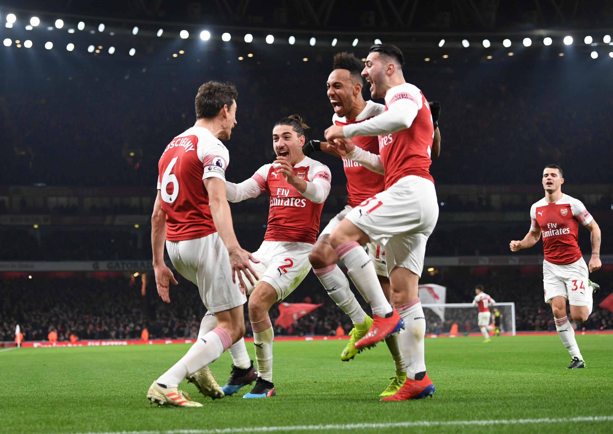
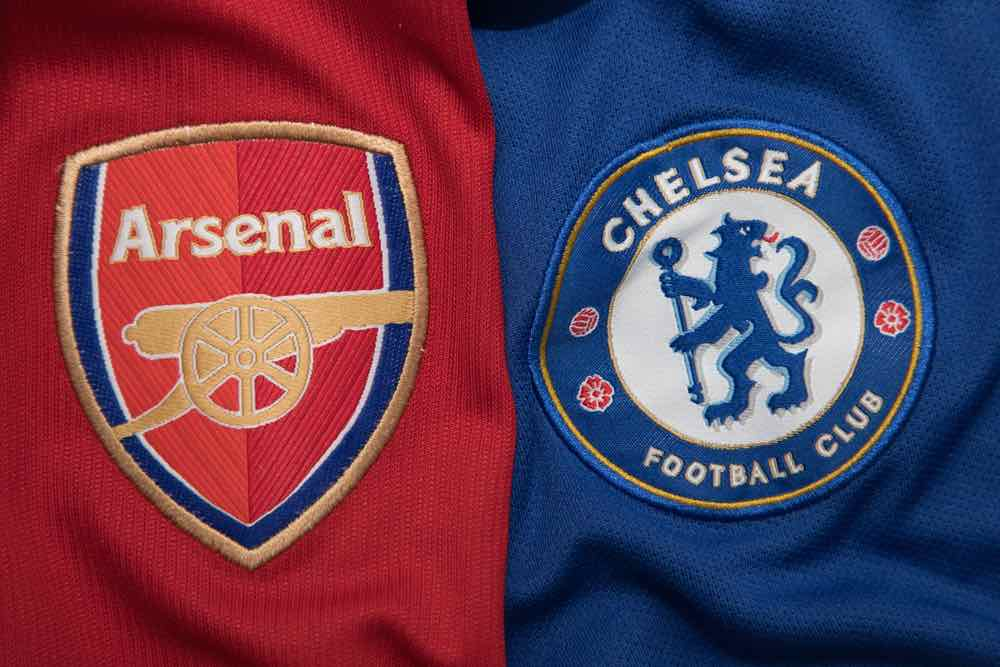
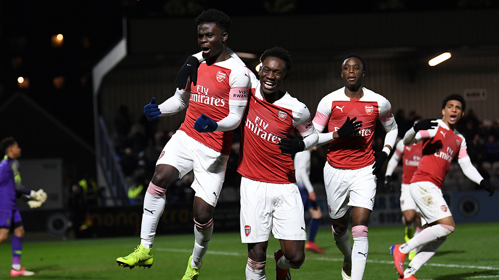
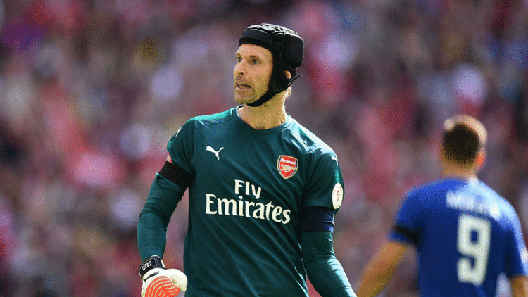

News

Injure of Bellerin
Further to the injury sustained during our match against Chelsea on Saturday, we can confirm that Hector has ruptured the anterior cruciate ligament of his left knee. More ...

Arsenal 2-0 Chelsea
Goals from Alex Lacazette and Laurent Koscielny sealed a fine victory at Emirates Stadium that puts us within touching distance of Chelsea in the race for a top-four place. More ...

Red vs Blue
We faced the Blues twice at home last season, drawing 2-2 in the Premier League at the start of January 2018 before beating them 2-1 in the EFL Cup semi-final second leg three weeks later. More ...

Youth Cup: Arsenal 5-2 Tottenham
We twice came from behind to secure a dramatic 5-2 win over Tottenham Hotspur and book our place in the fifth round of the FA Youth Cup.More ...

Cech is a very big player and a very big person
Unai Emery paid tribute to Petr Cech in his press conference on Thursday after the legendary goalkeeper announced that he will retire at the end of the season.More ...